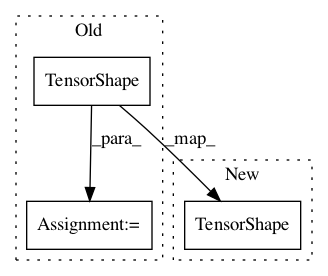

cff7c0087b9aae064aa7cd08de67a76ea19c6e63,ops.py,,tt_tt_matmul,#Any#Any#,46
Before Change
res_ranks = []
for core_idx in range(ndims + 1):
res_ranks.append(a_ranks[core_idx] * b_ranks[core_idx])
res_ranks = tf.TensorShape(res_ranks)
else:
res_ranks = None
return TensorTrain(result_cores, res_shape, res_ranks)
After Change
static_a_ranks = tt_matrix_a.get_tt_ranks()
static_b_ranks = tt_matrix_b.get_tt_ranks()
out_ranks = [a_r * b_r for a_r, b_r in zip(static_a_ranks, static_b_ranks)]
return TensorTrain(result_cores, res_shape, tf.TensorShape(out_ranks))
def tt_dense_matmul(tt_matrix_a, matrix_b):
In pattern: SUPERPATTERN
Frequency: 3
Non-data size: 3
Instances
Project Name: Bihaqo/t3f
Commit Name: cff7c0087b9aae064aa7cd08de67a76ea19c6e63
Time: 2017-03-11
Author: novikov@bayesgroup.ru
File Name: ops.py
Class Name:
Method Name: tt_tt_matmul
Project Name: Bihaqo/t3f
Commit Name: 09b9b2020f9c90add2cb78203da434230ee6b086
Time: 2017-02-03
Author: novikov@bayesgroup.ru
File Name: tensor_train.py
Class Name:
Method Name: _clean_shape
Project Name: OpenNMT/OpenNMT-tf
Commit Name: 20a10db025b8e21c98dd4c4be11d13841e49d2f3
Time: 2017-08-16
Author: guillaume.klein@systrangroup.com
File Name: opennmt/decoders/self_attention_decoder.py
Class Name: SelfAttentionDecoder
Method Name: dynamic_decode